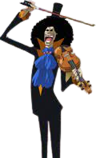
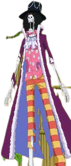

Brook
conhecendo o personagem
 
rook é o músico dos Piratas do Chapéus de Palha e o membro mais velho entre eles. Ele fazia parte dos Piratas Rumbar, que morreram há muitos anos atrás, mas Brook foi ressuscitado com o poder da Yomi Yomi no Mi. A Akuma no Mi que Brook comeu lhe deu o poder da ressurreição, mas, quando ele voltou à vida, só restavam ossos em seu corpo